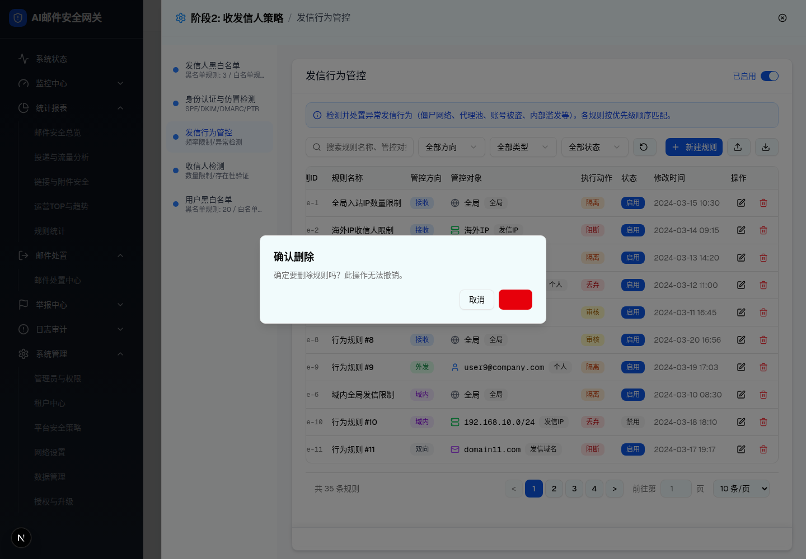
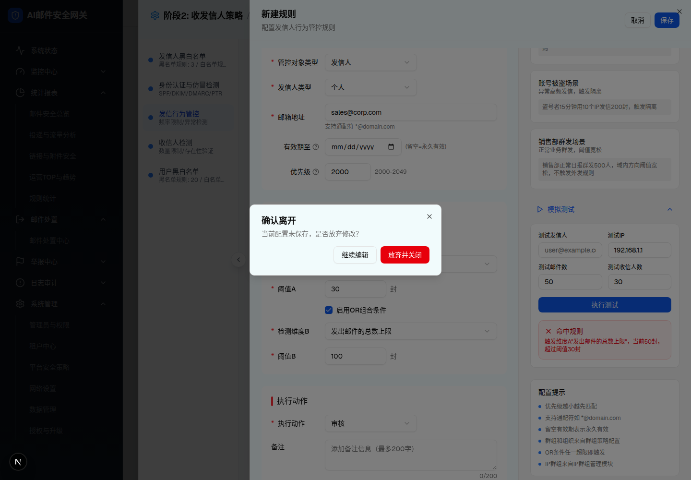

| 所属组件 | 2.2 规则列表（删除确认）/ 2.3 规则编辑抽屉（未保存确认） |
| 主文件 | index.html |
| 触发路径 | ① 层级0 列表行内 Trash2 图标 → AlertDialog；② 层级1 抽屉 isDirty=true 时点击"取消"/关闭/点遮罩 → Dialog |
| demo 组件 | sender-behavior-control-module.tsx（AlertDialog）/ behavior-rule-drawer.tsx（Dialog sm:max-w-[400px]） |
规则行：rule-1 全局入站IP数量限制
确定要删除规则吗？此操作无法撤销。
✓ 已删除（demo 中该行立即从列表移除，无 Toast）

| 元素 | 实际文案/属性 | 交互行为 |
|---|---|---|
| 标题 | 确认删除 | — |
| 描述 | 确定要删除规则吗？此操作无法撤销。 | 不显示被删规则名称（可考虑增强） |
| 取消按钮 | outline"取消" | 关闭对话框，不删除 |
| 删除按钮 | bg-destructive text-destructive-foreground，文字实际不可见（D-12） | 确认删除：规则从列表移除；无成功 Toast（D-17） |
| 比对项 | demo 实际 DOM | 预览 HTML | 是否一致 |
|---|---|---|---|
| 对话框文本 | "确认删除 | 确定要删除规则吗？此操作无法撤销。| 取消 | 删除"（浏览器提取） | 同文案 | 一致 |
| 按钮数 | 2（取消 / 删除） | 2 | 一致 |
| 删除按钮可见性 | 红底、文字不可见（截图证实） | 预览按规格意图渲染白字"删除"，缺陷已在差异表记录 | 一致（缺陷单独标注） |
抽屉内已修改字段（isDirty=true），此时点击：
当前配置未保存，是否放弃修改？
已放弃修改并关闭抽屉（demo 中回到规则列表，表单丢弃）

| 元素 | 实际文案/属性 | 交互行为 |
|---|---|---|
| 标题 | 确认离开 | — |
| 描述 | 当前配置未保存，是否放弃修改？ | — |
| 继续编辑 | outline | 关闭对话框，留在抽屉 |
| 放弃并关闭 | destructive 红色（文字可见） | 关闭对话框 + 关闭抽屉，丢弃表单；无"保存"选项（差异 D-11） |
| 触发条件 | isDirty（任意 updateField 后为 true）时 Sheet onOpenChange(false) | 未修改时直接关闭、不弹框（浏览器验证） |
| 比对项 | demo 实际 DOM | 预览 HTML | 是否一致 |
|---|---|---|---|
| 对话框文本 | "确认离开 | 当前配置未保存，是否放弃修改？ | 继续编辑 | 放弃并关闭"（浏览器提取） | 同文案 | 一致 |
| 按钮数 | 2 + 右上 Close | 2（Close 省略） | 一致（结构裁剪） |
| 宽度 | sm:max-w-[400px] | 400px | 一致 |